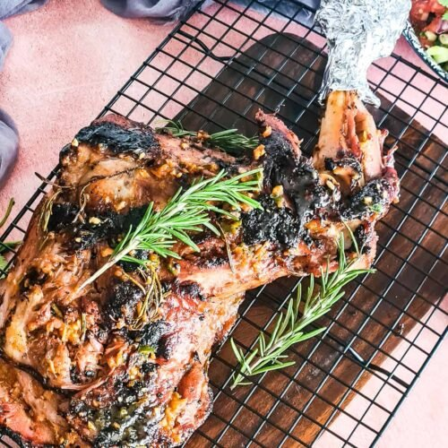

HOW TO PREPARE GOOOOD NYAM CHOM

Description
The nyama choma is a specialty of grilled goat meat.
Roasted meat is very popular in Kenya where it is considered the national dish also in Tanzania.
The expression nyama choma means « barbecue meat » in kiswahili
Ingredients
- meat (goat or cow)
- salt
- ginger
- pepper
- onions
- garlic
- lemon juice
- cooking oil
- water
Steps to making nyama choma
- marinate it first in a mixture of onions,
garlic and ground ginger, with some hot pepper and lemon juice.
- add salt and pepper
- roast it on hot charcoal (dont burn it please)
- serve it when ready
- side dishes to go with are kachumbari and ugali